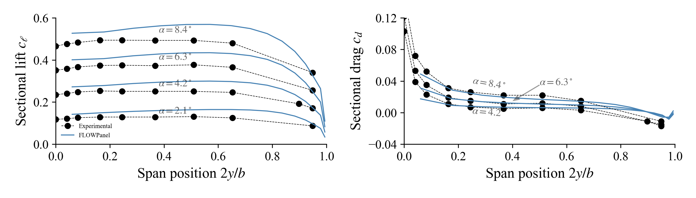
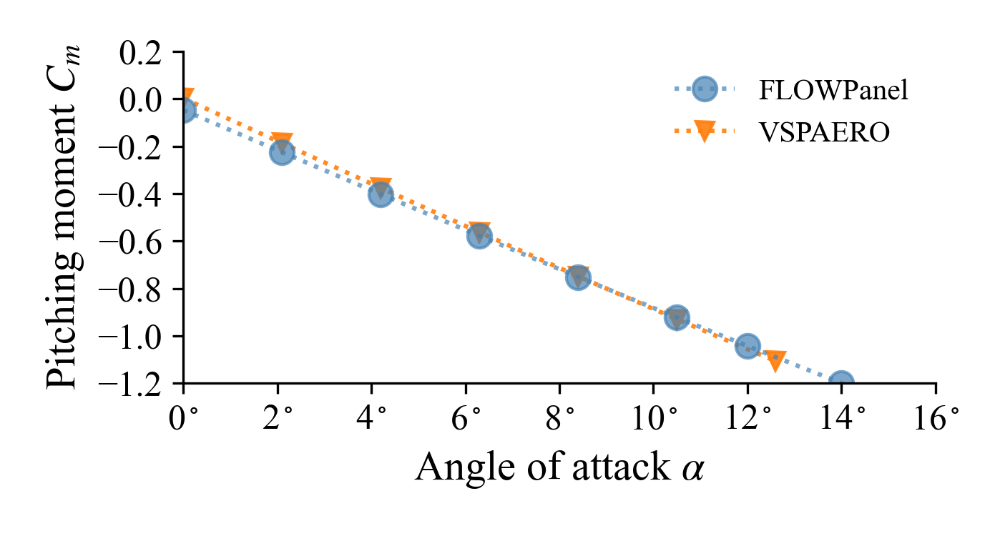

Swept Wing
$4.2^\circ$ Angle of Attack

#=##############################################################################
# DESCRIPTION
45deg swept-back wing at an angle of attack of 4.2deg. This wing has an
aspect ratio of 5.0, a RAE 101 airfoil section with 12% thickness, and no
dihedral, twist, nor taper. This test case matches the experimental setup
of Weber, J., and Brebner, G., “Low-Speed Tests on 45-deg Swept-Back Wings,
Part I,” Tech. rep., 1951.
# AUTHORSHIP
* Author : Eduardo J. Alvarez
* Email : Edo.AlvarezR@gmail.com
* Created : Dec 2022
* License : MIT License
=###############################################################################
import FLOWPanel as pnl
run_name = "sweptwing000" # Name of this run
save_path = run_name # Where to save outputs
examples_path = splitdir(@__FILE__)[1] # Path to examples
airfoil_path = joinpath(examples_path, "data") # Where to find airfoil contours
paraview = true # Whether to visualize with Paraview
# ----------------- SIMULATION PARAMETERS --------------------------------------
AOA = 4.2 # (deg) angle of attack
magVinf = 30.0 # (m/s) freestream velocity
Vinf = magVinf*[cos(AOA*pi/180), 0, sin(AOA*pi/180)] # Freestream
rho = 1.225 # (kg/m^3) air density
# ----------------- GEOMETRY DESCRIPTION ---------------------------------------
b = 98*0.0254 # (m) span length
ar = 5.0 # Aspect ratio b/c_tip
tr = 1.0 # Taper ratio c_tip/c_root
twist_root = 0 # (deg) twist at root
twist_tip = 0 # (deg) twist at tip
lambda = 45 # (deg) sweep
gamma = 0 # (deg) dihedral
airfoil = "airfoil-rae101.csv" # Airfoil contour file
# ----- Chordwise discretization
# NOTE: NDIVS is the number of divisions (panels) in each dimension. This an be
# either an integer, or an array of tuples as shown below
n_rfl = 8 # Control number of chordwise panels
# n_rfl = 10 # <-- uncomment this for finer discretization
# 0 to 0.25 of the airfoil has `n_rfl` panels at a geometric expansion of 10 that is not central
NDIVS_rfl = [ (0.25, n_rfl, 10.0, false),
# 0.25 to 0.75 of the airfoil has `n_rfl` panels evenly spaced
(0.50, n_rfl, 1.0, true),
# 0.75 to 1.00 of the airfoil has `n_rfl` panels at a geometric expansion of 0.1 that is not central
(0.25, n_rfl, 1/10.0, false)]
# NOTE: A geometric expansion of 10 that is not central means that the last
# panel is 10 times larger than the first panel. If central, the
# middle panel is 10 times larger than the peripheral panels.
# ----- Spanwise discretization
n_span = 15 # Number of spanwise panels on each side of the wing
# n_span = 60 # <-- uncomment this for finer discretization
NDIVS_span_l = [(1.0, n_span, 10.0, false)] # Discretization of left side
NDIVS_span_r = [(1.0, n_span, 10.0, false)] # Discretization of right side
# ----------------- GENERATE BODY ----------------------------------------------
println("Generating body...")
#= NOTE: Here we loft each side of the wing independently. One could also loft
the entire wing at once from left tip to right tip, but the sweep of the
wing would lead to an asymmetric discretization with the panels of left
side side would have a higher aspect ratio than those of the right side.
To avoid that, instead we loft the left side from left to right, then we
loft to right side from right to left, and we combine left and right
sides into a MultiBody that represents the wing.
=#
bodytype = pnl.RigidWakeBody{pnl.VortexRing} # Elements and wake model
# Arguments for lofting the left side of the wing
bodyoptargs_l = (
CPoffset=1e-14, # Offset control points slightly in the positive normal direction
characteristiclength=(args...)->b/ar, # Characheristic length for control point offset
kerneloffset=1e-8, # Offset of kernel to avoid singularities
kernelcutoff=1e-14 # Cutoff of kernel to avoid singularities
)
# Same arguments but negative CPoffset since the normals are flipped
bodyoptargs_r = (
CPoffset=-bodyoptargs_l.CPoffset,
characteristiclength=bodyoptargs_l.characteristiclength,
kerneloffset=bodyoptargs_l.kerneloffset,
kernelcutoff=bodyoptargs_l.kernelcutoff
)
# Loft left side of the wing from left to right
@time wing_left = pnl.simplewing(b, ar, tr, twist_root, twist_tip, lambda, gamma;
bodytype=bodytype, bodyoptargs=bodyoptargs_l,
airfoil_root=airfoil, airfoil_tip=airfoil,
airfoil_path=airfoil_path,
rfl_NDIVS=NDIVS_rfl,
delim=",",
span_NDIVS=NDIVS_span_l,
b_low=-1.0, b_up=0.0
)
# Loft right side of the wing from right to left
@time wing_right = pnl.simplewing(b, ar, tr, twist_root, twist_tip, lambda, gamma;
bodytype=bodytype, bodyoptargs=bodyoptargs_r,
airfoil_root=airfoil, airfoil_tip=airfoil,
airfoil_path=airfoil_path,
rfl_NDIVS=NDIVS_rfl,
delim=",",
span_NDIVS=NDIVS_span_r,
b_low=1.0, b_up=0.0,
)
# Put both sides together to make a wing with symmetric discretization
bodies = [wing_left, wing_right]
names = ["L", "R"]
@time body = pnl.MultiBody(bodies, names)
println("Number of panels:\t$(body.ncells)")
# ----------------- CALL SOLVER ------------------------------------------------
println("Solving body...")
# Freestream at every control point
Uinfs = repeat(Vinf, 1, body.ncells)
# Unitary direction of semi-infinite vortex at points `a` and `b` of each
# trailing edge panel
Das = repeat(Vinf/magVinf, 1, body.nsheddings)
Dbs = repeat(Vinf/magVinf, 1, body.nsheddings)
# Solve body (panel strengths) giving `Uinfs` as boundary conditions and
# `Das` and `Dbs` as trailing edge rigid wake direction
@time pnl.solve(body, Uinfs, Das, Dbs)
# ----------------- POST PROCESSING --------------------------------------------
println("Post processing...")
# NOTE: A thick body with only vortex ring elements leads to a surface velocity
# that is inaccurate at the exact surface of the body, but that
# approximates the physical solution away from the surface. For this
# reason, we probe the velocity used to calculate Cp slightly away from
# the body
# Calculate velocity away from the body
@time Us = pnl.calcfield_U(body, body; fieldname="Uoff",
offset=0.02, characteristiclength=(args...)->b/ar)
# Calculate pressure coefficient
@time Cps = pnl.calcfield_Cp(body, magVinf; U_fieldname="Uoff")
# Calculate the force of each panel
@time Fs = pnl.calcfield_F(body, magVinf, rho; U_fieldname="Uoff")
# ----------------- VISUALIZATION --------------------------------------------------
if paraview
str = save_path*"/"
# Save body as a VTK
str *= pnl.save(body, "wing"; path=save_path, wake_panel=false, debug=false)
# Call Paraview
run(`paraview --data=$(str)`)
end
(see the complete example under examples/sweptwing.jl to see how to postprocess the solution to calculate the slices of pressure distribution and spanwise loading that is plotted here below)
Chordwise pressure distribution

Pressure difference

Spanwise loading distribution

| Experimental | FLOWPanel | Error | |
|---|---|---|---|
| $C_L$ | 0.238 | 0.22442 | 5.704% |
| $C_D$ | 0.005 | 0.01208 | 141.695% |
AOA Sweep
Using the wing defined in the previous section, we now sweep the angle of attack.
AOAs = [0, 2.1, 4.2, 6.3, 8.4, 10.5, 12, 14, 16] # (deg) angles of attack
Xac = [0.25*b/ar, 0, 0] # (m) aerodynamic center for moment calculation
# Results are stored in these arrays
Ls, Ds = [], [] # Lift and drag at each angle of attack
Lhats, Dhats = [], [] # Direction of lift and drag at each AOA
rolls, pitchs, yaws = [], [], [] # Rolling, pitching, and yawing moment
lhats, mhats, nhats = [], [], [] # Direction of roll, pitch, and yaw
ls, ds = [], [] # Load and drag distributions
spanposs = [] # Spanwise positions for load distributions
# ----------------- AOA SWEEP --------------------------------------------------
for AOA in AOAs
Vinf = magVinf*[cos(AOA*pi/180), 0, sin(AOA*pi/180)] # Freestream
# ----------------- CALL SOLVER --------------------------------------------
# Freestream at every control point
Uinfs = repeat(Vinf, 1, body.ncells)
Das = repeat(Vinf/magVinf, 1, body.nsheddings)
Dbs = repeat(Vinf/magVinf, 1, body.nsheddings)
# Solve body
@time pnl.solve(body, Uinfs, Das, Dbs)
# ----------------- POST PROCESSING ----------------------------------------
# Calculate velocity away from the body
Us = pnl.calcfield_U(body, body; fieldname="Uoff",
offset=0.02, characteristiclength=(args...)->b/ar)
# Calculate pressure coeffiecient
Cps = pnl.calcfield_Cp(body, magVinf; U_fieldname="Uoff")
# Calculate the force of each panel
Fs = pnl.calcfield_F(body, magVinf, rho; U_fieldname="Uoff")
# Integrated force decomposed into lift and drag
Dhat = Vinf/norm(Vinf) # Drag direction
Shat = [0, 1, 0] # Span direction
Lhat = cross(Dhat, Shat) # Lift direction
LDS = pnl.calcfield_LDS(body, Lhat, Dhat, Shat)
L = LDS[:, 1]
D = LDS[:, 2]
push!(Ls, L)
push!(Ds, D)
push!(Lhats, Lhat)
push!(Dhats, Dhat)
# Integrated moment decomposed into rolling, pitching, and yawing moments
lhat = Dhat # Rolling direction
mhat = Shat # Pitching direction
nhat = Lhat # Yawing direction
lmn = pnl.calcfield_lmn(body, Xac, lhat, mhat, nhat)
roll, pitch, yaw = collect(eachcol(lmn))
push!(rolls, roll)
push!(pitchs, pitch)
push!(yaws, yaw)
push!(lhats, lhat)
push!(mhats, mhat)
push!(nhats, nhat)
# Calculate loading distribution
fs, spanpos = pnl.calcfield_sectionalforce(wing_right; spandirection=[0, 1, 0])
lds = pnl.decompose(fs, Lhat, Dhat)
l = lds[1, :]
d = lds[2, :]
push!(spanposs, spanpos)
push!(ls, l)
push!(ds, d)
end
(see the complete example under examples/sweptwing_aoasweep.jl to see how to postprocess the solution as plotted here below)
Spanwise loading distribution 
Lift and induced drag

Pitching moment

Solver Benchmark
The problem of solving the panel strengths that satisfy the no-flow-through condition poses a linear system of equation of the form
\[\begin{align*} A y = b ,\end{align*}\]
where $A$ is the matrix containing the geometry of the panels and wake, $y$ is the vector of panel strengths, and $b$ is the vector of boundary conditions. This is trivially solved as
\[\begin{align*} y = A^{-1}b ,\end{align*}\]
however, depending on the size of $A$ (which depends on the number of panels) it can become inefficient or even unfeasible to explicitely calculate the inverse of $A$. Multiple linear solvers are available in FLOWPanel that avoid explicitely inverting $A$, which are described and benchmarked as follows.
The complete code is available at examples/sweptwing_solverbenchmark.jl but you should also be able to copy and paste these lines after running the first section of this example.
Backslash operator \
Most programming languages implement an operator \ that directly calculates the matrix-vector product $A^{-1}b$. This is more efficient than directly inverting $A$ and then multiplying by $b$, without loosing any accuracy. This linear solver is available under this function:
FLOWPanel.solve_backslash! — Functionsolve_backslash!(y::AbstractVector, A::AbstractMatrix, b::AbstractVector)Solves a linear system of equations of the form $Ay = b$ using the \ operator.
The solution is stored under y.
and is used as follows:
import Printf: @sprintf
function calc_lift_drag(body, b, ar, Vinf, magVinf, rho; verbose=true, lbl="")
CLexp = 0.238
CDexp = 0.005
str = ""
if verbose
str *= @sprintf "| %15.15s | %-7s | %-7s |\n" "Solver" "CL" "CD"
str *= "| --------------: | :-----: | :-----: |\n"
end
# Calculate velocity away from the body
Us = pnl.calcfield_U(body, body; fieldname="Uoff",
offset=0.02, characteristiclength=(args...)->b/ar)
# Calculate pressure coeffiecient
Cps = pnl.calcfield_Cp(body, magVinf; U_fieldname="Uoff")
# Calculate the force of each panel
Fs = pnl.calcfield_F(body, magVinf, rho; U_fieldname="Uoff")
# Calculate total force of the vehicle decomposed as lfit, drag, and sideslip
Dhat = Vinf/pnl.norm(Vinf) # Drag direction
Shat = [0, 1, 0] # Span direction
Lhat = pnl.cross(Dhat, Shat) # Lift direction
LDS = pnl.calcfield_LDS(body, Lhat, Dhat)
L = LDS[:, 1]
D = LDS[:, 2]
# Force coefficients
nondim = 0.5*rho*magVinf^2*b^2/ar # Normalization factor
CL = sign(pnl.dot(L, Lhat)) * pnl.norm(L) / nondim
CD = sign(pnl.dot(D, Dhat)) * pnl.norm(D) / nondim
err = abs(CL-CLexp)/CLexp
if verbose
str *= @sprintf "| %15.15s | %-7.4f | %-7.4f |\n" lbl CL CD
str *= @sprintf "| %15.15s | %-7s | %-7s |\n" "Experimental" CLexp CDexp
str *= @sprintf "\n\tCL Error:\t%4.3g﹪\n" err*100
end
return CL, CD, str
end
# ----- Linear solver test: backslash \ operator
t = @elapsed pnl.solve(body, Uinfs, Das, Dbs; solver=pnl.solve_backslash!)
CL, CD, str = calc_lift_drag(body, b, ar, Vinf, magVinf, rho; lbl="Backslash")| Solver | CL | CD |
|---|---|---|
| Backslash | 0.2247 | 0.0130 |
| Experimental | 0.238 | 0.005 |
CL Error: 5.57﹪
Run time: 0.44 secondsLU decomposition
Pre-calculating and re-using the LU decomposition of $A$ is advantageous when the linear system needs to be solved for multiple boundary conditions.
FLOWPanel.solve_ludiv! — Functionsolve_ludiv!(y::AbstractVector,
A::AbstractMatrix, b::AbstractVector; Alu=nothing)Solves a linear system of equations of the form $Ay = b$ using the LU decomposition of A provided under Alu and LinearAlgebra.ldiv!. If Alu is not provided, it will be automatically calculated using LinearAlgebra.lu.
This method is useful when the system needs to be solved multiple times for different b vectors since Alu can be precomputed and re-used. We recommend you use FLOWPanel.calc_Alu to compute Alu since this function has been overloaded for Dual and TrackedReal numbers. solve_ludiv! has also been overloaded with ImplicitAD to efficiently differentiate the linear solver as needed.
The solution is stored under y.
import FLOWPanel as pnl
Alu = pnl.calc_lu(A)
pnl.solve_ludiv!(y, A, b; Alu=Alu)Running the solver:
t = @elapsed pnl.solve(body, Uinfs, Das, Dbs; solver=pnl.solve_ludiv!)
CL, CD, str = calc_lift_drag(body, b, ar, Vinf, magVinf, rho; lbl="LUdiv")| Solver | CL | CD |
|---|---|---|
| LUdiv | 0.2247 | 0.0130 |
| Experimental | 0.238 | 0.005 |
CL Error: 5.57﹪
Run time: 0.48 secondsIterative Krylov Solver
Iterative Krylov subspace solvers converge to the right solution rather than directly solving the system of equations. This allows the user to trade off accuracy for computational speed by tuning the tolerance of the solver.
The generalized minimal residual (GMRES) method provided by Krylov.jl is available in FLOWPanel.
FLOWPanel.solve_gmres! — Functionsolve_gmres!(y::AbstractVector,
A::AbstractMatrix, b::AbstractVector; Avalue=nothing,
atol=1e-8, rtol=1e-8, optargs...)Solves a linear system of equations of the form $Ay = b$ through the generalized minimal residual (GMRES) method, which is an iterative method in the Krylov subspace.
This iterative method is more efficient than a direct method (solve_backslack! or solve_ludiv!) when A is larger than 3000x3000 or so. Also, iterative methods can trade off accuracy for speed by lowering the tolerance (atol and rtol). Optional arguments optargs... will be passed to Krylov.gmres.
Differentiating through the solver will require extracting the primal values of A, which can be provided through the argument Avalue (this is calculated automatically if not already provided).
The solution is stored under y.
import FLOWPanel as pnl
Avalue = pnl.calc_Avalue(A)
pnl.solve_gmres!(y, A, b; Avalue=Avalue)Running the solver with tolerance $10^{-8}$:
stats = [] # Stats of GMRES get stored here
t = @elapsed pnl.solve(body, Uinfs, Das, Dbs;
solver = pnl.solve_gmres!,
solver_optargs = (atol=1e-8, rtol=1e-8, out=stats))
CL, CD, str = calc_lift_drag(body, b, ar, Vinf, magVinf, rho; lbl="GMRES tol=1e-8")| Solver | CL | CD |
|---|---|---|
| GMRES tol=1e-8 | 0.2247 | 0.0130 |
| Experimental | 0.238 | 0.005 |
CL Error: 5.57﹪
Simple stats
niter: 286
solved: true
inconsistent: false
residuals: []
Aresiduals: []
κ₂(A): []
status: solution good enough given atol and rtol
Run time: 0.70 secondsRunning the solver with tolerance $10^{-2}$:
stats = [] # Stats of GMRES get stored here
t = @elapsed pnl.solve(body, Uinfs, Das, Dbs;
solver = pnl.solve_gmres!,
solver_optargs = (atol=1e-2, rtol=1e-2, out=stats))
CL, CD, str = calc_lift_drag(body, b, ar, Vinf, magVinf, rho; lbl="GMRES tol=1e-2")| Solver | CL | CD |
|---|---|---|
| GMRES tol=1e-2 | 0.2239 | 0.0123 |
| Experimental | 0.238 | 0.005 |
CL Error: 5.93﹪
Simple stats
niter: 88
solved: true
inconsistent: false
residuals: []
Aresiduals: []
κ₂(A): []
status: solution good enough given atol and rtol
Run time: 0.39 secondsRunning the solver with tolerance $10^{-1}$:
stats = [] # Stats of GMRES get stored here
t = @elapsed pnl.solve(body, Uinfs, Das, Dbs;
solver = pnl.solve_gmres!,
solver_optargs = (atol=1e-1, rtol=1e-1, out=stats))
CL, CD, str = calc_lift_drag(body, b, ar, Vinf, magVinf, rho; lbl="GMRES tol=1e-1")| Solver | CL | CD |
|---|---|---|
| GMRES tol=1e-1 | 0.2520 | 0.0126 |
| Experimental | 0.238 | 0.005 |
CL Error: 5.9﹪
Simple stats
niter: 25
solved: true
inconsistent: false
residuals: []
Aresiduals: []
κ₂(A): []
status: solution good enough given atol and rtol
Run time: 0.30 seconds